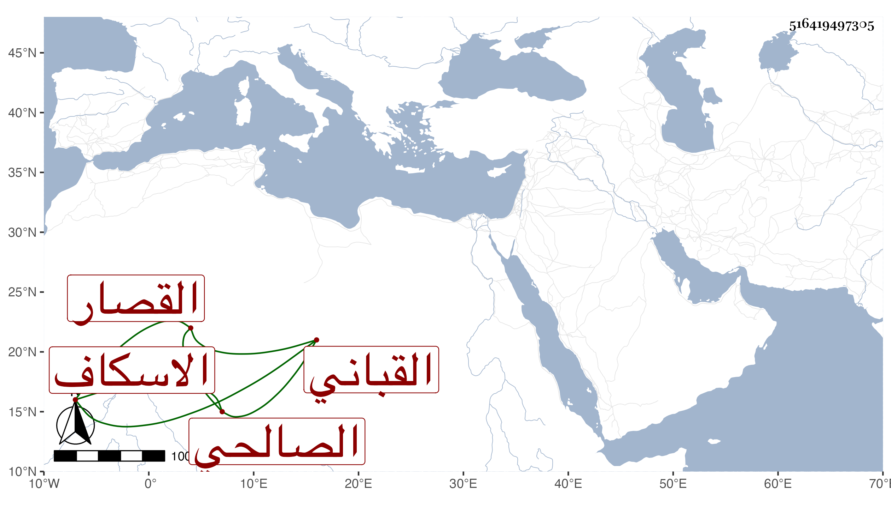

0902Sakhawi.DawLamic.ITO20230111-ara1.EIS1600.516419497305
Biography ID: 516419497305
430
أحمد بن محمد بن علي بن محمد بن شعبان الشهاب الصالحي القصار الآدمي الاسكاف القباني والده أخو محمد الآتي ويعرف بابن الجوازة وربما حذف محمد الثاني من نسبه . ولد سنة أربع وأربعين وسبعمائة وسمع من أحمد بن عبد الحميد ابن عبد الهادي جزء الجابري ونسخة إسماعيل بن قيراط وغيرهما وحدث سمع منه الفضلاء ولقيه ابن موسى في سنة خمس عشرة فسمع عليه هو ورفيقه الموفق الأبي ، وذكره شيخنا في معجمه وقال أنه أجاز لأولاده سنة أربع عشرة .
